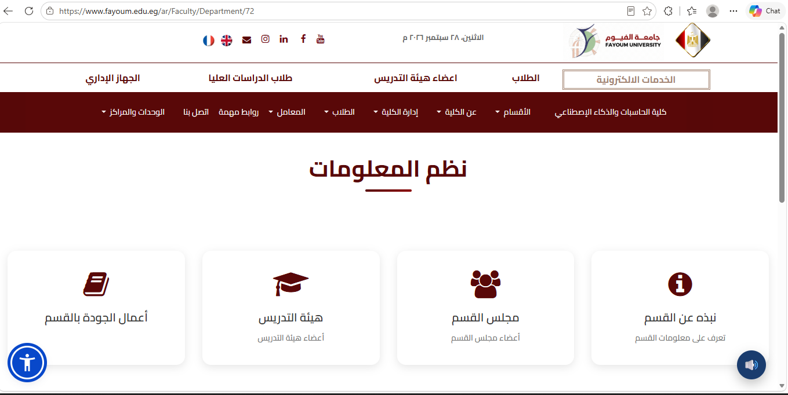
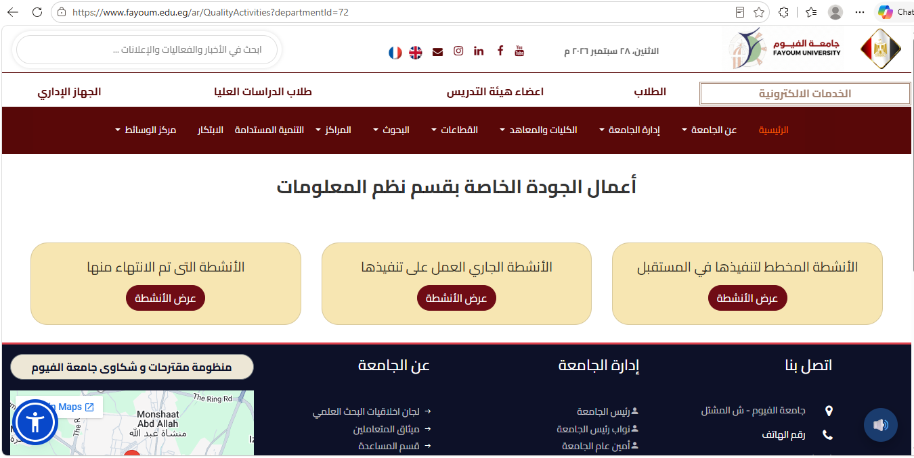
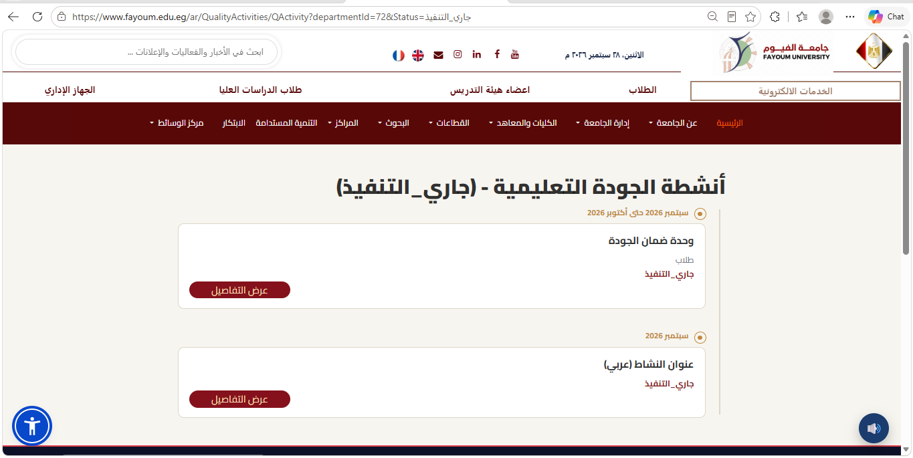
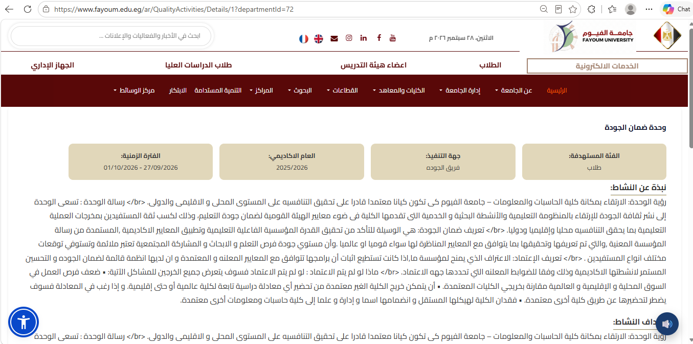

دليل خطوات إدخال وعرض أعمال الجودة
الشاشة الأولى: الدخول للقسم
لإضافة بيانات الجودة الخاصة بالقسم، يتم الدخول على صفحة القسم بالكلية، ثم الضغط على أيقونة "أعمال الجودة بالقسم" للانتقال إلى الشاشة الثانية[cite: 1].

الشاشة الثانية: أعمال الجودة الخاصة بالقسم
بعد الانتقال، نجد 3 تقسيمات رئيسية لأعمال الجودة وهي: الأنشطة التي تم الانتهاء منها، الأنشطة الجاري العمل على تنفيذها، والأنشطة المخطط لتنفيذها في المستقبل[cite: 2].

الشاشة الثالثة: التقسيم الزمني (التايم لاين)
هنا يتم عرض الأنشطة مقسمة زمنياً من الأحدث إلى الأقدم حسب تاريخ انتهاء الفترة الزمنية للنشاط (مثل جاري التنفيذ في فترة محددة)، مع توفر زر "عرض التفاصيل" لكل نشاط.

الشاشة الرابعة: عرض البيانات الكاملة للنشاط
عند الضغط على عرض التفاصيل، تنتقل للشاشة الرابعة لعرض البيانات بالكامل التي تم إدخالها (الفترة الزمنية، العام الأكاديمي، جهة التنفيذ، الفئة المستهدفة، ونبذة عن النشاط وأهدافه).
